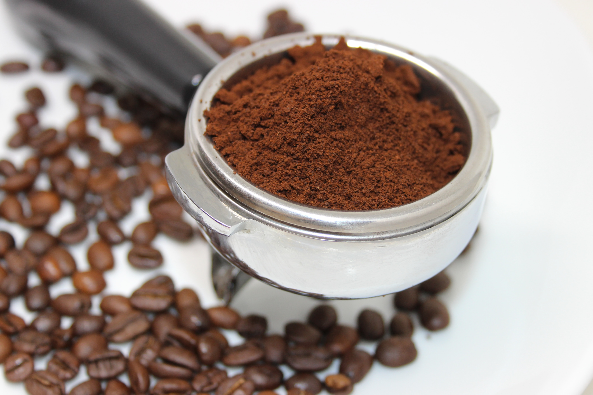
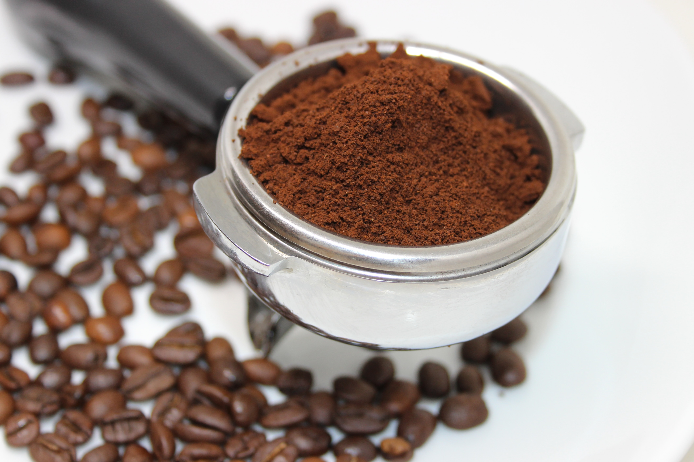

Excelsa
 

Excelsa coffee beans are a variant of Liberica, and grow mostly in Southeast Asia. These elongated beans thrive at medium altitudes and grow upward of 20-30 feet.
Enjoy the tart yet fruity flavors mixed with the darkness of other roasts. Most folks prefer mixing Excelsa with other beans since it adds more depth to the flavor. Read More...